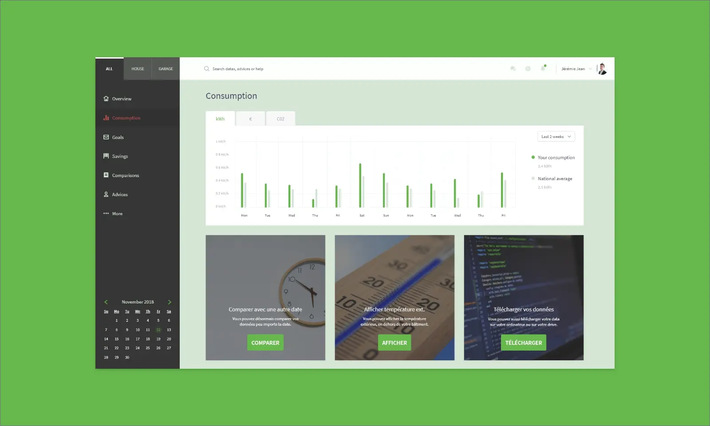
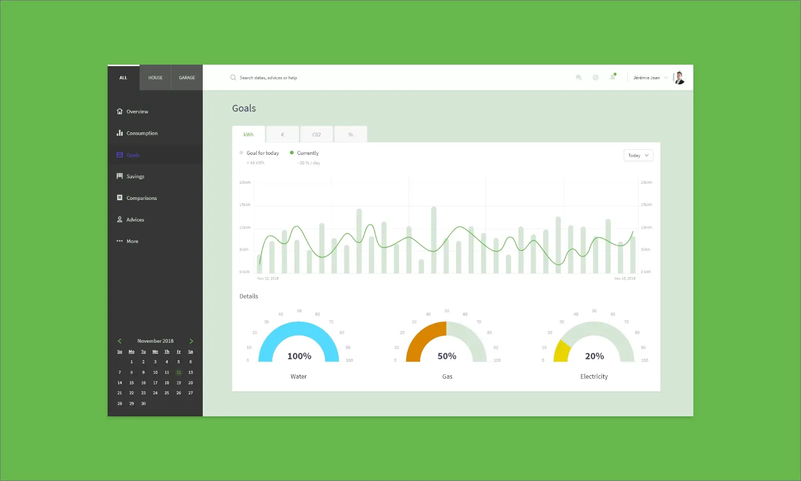

eGreen
UI Design
eGreen is a French startup which works in the field of energy. They are specialized in reducing the energy consumption of their customers. They offer their customers the possibility to control their energy costs from a web app, eGreen gives advices to save money, although sensibilized to the ecology.
Discovering Moqups
During my 5-week internship, I was in charge of the UI and icons revamp for eGreen. Also, I worked on the UX of a project in partnership with the Mairie de Paris, which aimed to help smalls Parisian businesses (hairdresser, baker, butcher, ect).
Year
July 2014
Lire en Français 🇫🇷